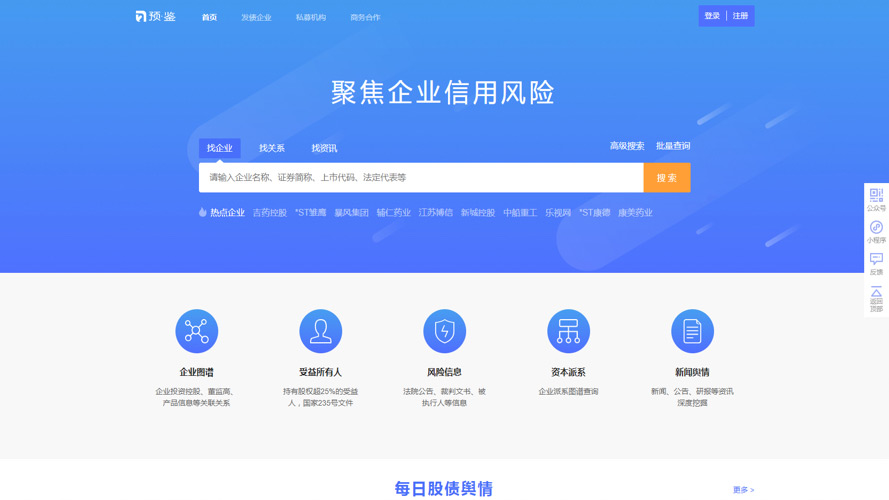

首页
产品及服务
信用服务
信用风险管理
债乎 CreditMaster
债券信用风险一站式管理
云瞻
消费金融数据风控
中证预鉴 CreditPortal
企业信用风险传导预警平台
信用增进
风险业务综合管理平台
集业务管理与风险管理为一体
中小微增信服务平台
助贷服务、资产服务
信用资产交易管理服务
Ratingdog
债券估值与定价
DealingMatrix
债券及同业报价
不良资产估值
不良资产估值辅助工具
基础服务
数据服务
DaaS
企业数据服务
功能服务
BaaS
中证区块链基础服务
解决方案
解决方案
证券
内部评级体系建设
投资者适当性管理
融资担保
融担业务综合管理
监管
私募基金风险管理
文档中心
关于我们
关于我们
了解信用云
联系我们
中证预鉴 CreditPortal
企业信用风险查询、监控和预警平台，基于工商、司法、诚信、经营、财务、新闻、公告等全维度企业数据，运用人工智能和大数据技术，以企业“信用风险传导”为核心，助力客户实现企业级信用风险管理。
联系我们
体验中证预鉴
应用场景
核心价值
功能服务
体验使用
常见问题
应用场景
Scenarios
企业信用数据查询
一键查询1.4亿社会实体、6000万+法人企业（含3000万+在营）信用状况，包括工商信息、股权结构、高管信息、受益人、实控人、经营状态、司法信息、诚信信息、舆情等，支持线上查询和客户本地部署。
企业风险监测预警
以信用风险传导为核心，构建中证信用专业的风险认定、传导、预警模型，7*24小时实时、批量监控目标企业的风险事件、负面舆情、信息变更等重要预警信号，实现智能预警。支持融合客户内部数据，实现本地部署。
应用场景
Scenarios
企业信用数据查询
一键查询1.4亿社会实体、6000万+法人企业（含3000万+在营）信用状况，包括工商信息、股权结构、高管信息、受益人、实控人、经营状态、司法信息、诚信信息、舆情等，支持线上查询和客户本地部署。
企业风险监测预警
以信用风险传导为核心，构建中证信用专业的风险认定、传导、预警模型，7*24小时实时、批量监控目标企业的风险事件、负面舆情、信息变更等重要预警信号，实现智能预警。支持融合客户内部数据，实现本地部署。
核心价值
Value Proposition
海量企业
1.4亿+社会实体、6000万+法人企业（含3000万+在营）、150万+金融产品
权威来源
来源可溯，合法合规；严格质控，准确可靠
360°画像
多维信息，全面覆盖；精确搜索，高效查询
专业服务
风险识别，量化评估；一键监控，智能预警
核心价值
Value Proposition
海量企业
1.4亿+社会实体、6000万+法人企业（含3000万+在营）、150万+金融产品
权威来源
来源可溯，合法合规；严格质控，准确可靠
360°画像
多维信息，全面覆盖；精确搜索，高效查询
专业服务
风险识别，量化评估；一键监控，智能预警
功能服务
Functionality
企业查询
海量企业覆盖，可根据企业名、地区、行业等字段进行精确/模糊查询。
企业图谱
股东关系、对外投资关系、主要客户、主要供应商、担保关系、管理层、基金产品、亲属等多维关系，逐级穿透，追本溯源。
新闻舆情
7*24小时全网舆情监控，11大信息源全面覆盖，分钟级别响应，智能情感判断、事件识别，人工审核校验。
企业风险
法院公告、开庭公告、裁判文书、失信人、被执行人、司法冻结等涉诉信息；监管机构、国家各部委、政府网站披露的诚信信息。
资本派系
逐级穿透股权，呈现派系全貌、派系归属、成员名单、控制路径。
监控预警
多维度企业风险监控体系，分组监控企业新增风险事件、新闻舆情，实时推送企业风险信息。
功能服务
Functionality
企业查询
海量企业覆盖，可根据企业名、地区、行业等字段进行精确/模糊查询。
企业图谱
股东关系、对外投资关系、主要客户、主要供应商、担保关系、管理层、基金产品、亲属等多维关系，逐级穿透，追本溯源。
新闻舆情
7*24小时全网舆情监控，11大信息源全面覆盖，分钟级别响应，智能情感判断、事件识别，人工审核校验。
企业风险
法院公告、开庭公告、裁判文书、失信人、被执行人、司法冻结等涉诉信息；监管机构、国家各部委、政府网站披露的诚信信息。
资本派系
逐级穿透股权，呈现派系全貌、派系归属、成员名单、控制路径。
监控预警
多维度企业风险监控体系，分组监控企业新增风险事件、新闻舆情，实时推送企业风险信息。
体验使用
Trial
中证预鉴-企业信用风险查询、监控和预警平台
满足客户投资机会挖掘、投前尽调、投中分析、投后监测、风险预警等需求，工商、司法、诚信、经营、财务、新闻、公告数据全覆盖，实现企业信用风险识别、监测、预警的全方位服务。
体验中证预鉴

体验使用
Trial
中证预鉴-企业信用风险查询、监控和预警平台
满足客户投资机会挖掘、投前尽调、投中分析、投后监测、风险预警等需求，工商、司法、诚信、经营、财务、新闻、公告数据全覆盖，实现企业信用风险识别、监测、预警的全方位服务。
体验中证预鉴
常见问题
FAQs
Q1：数据来源是否合规？
A：拥有来源可溯、合规合法的数据源，形成稳定可靠的数据资源池。
Q2：数据和预警服务是否支持本地部署？
A：支持。支持快速将全量/定制数据部署到客户本地数据库，自动同步更新，且支持数据同步请求由部署在客户的服务器端发起。
联
系
我
们